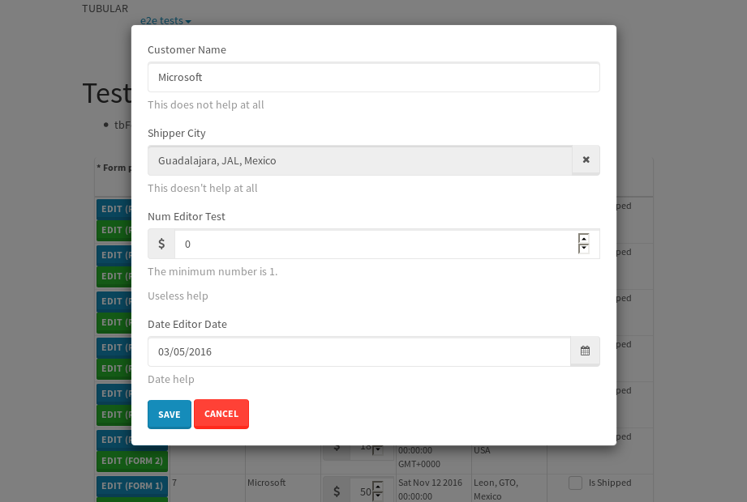
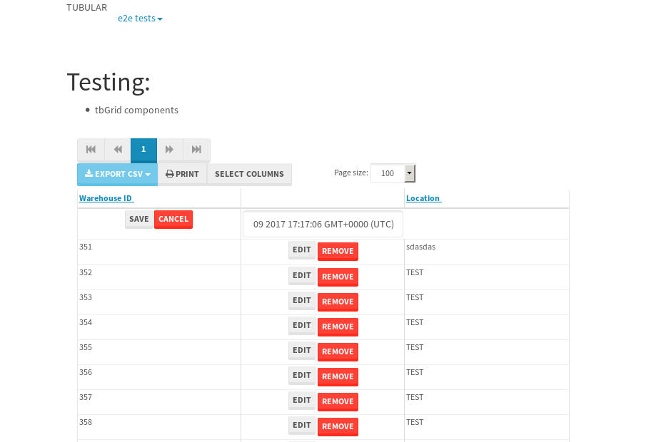

tbColumn.Grid Sorting - 30.949sTests: 5Skipped: 0Failures: 1 should sort data in ascending order then on descending order when sorting by Order Id column - 8.842sTests passed: 100.00%should order data in ascending order when click-sorting an unsorted text column - 5.579sTests passed: 100.00%should order data in descending order when click-sorting an ascending-sorted text column - 5.314sTests passed: 100.00%should order data in ascending order when click-sorting an unsorted date column - 5.494sTests passed: 100.00%should order data in descending order when click-sorting twice an unsorted date column - 5.714sExpected '12/30/2015' to match /1\/01\/2016/.✗Tests passed: 0.00%
tbEmptyForm - 3.786sTests: 3Skipped: 0Failures: 0 should have an empty required field - 0.424sTests passed: 100.00%should not be able to click on save - 0.027sTests passed: 100.00%should load default value for numeric field - 0.035sTests passed: 100.00%
Tubular Filters.tbColumnFilter - 99.633sTests: 12Skipped: 0Failures: 0 should cancel filtering when clicking outside filter-popover - 7.969sTests passed: 100.00%should disable Value text-input for "None" filter - 5.814sTests passed: 100.00%should disable apply button for "None" filter - 5.998sTests passed: 100.00%should decorate popover button when showing data is being filtered for its column - 11.39sTests passed: 100.00%should correctly filter data for the "Equals" filtering option - 7.973sTests passed: 100.00%should correctly filter data for the "Not Equals" filtering option - 8.636sTests passed: 100.00%should correctly filter data for the "Contains" filtering option - 7.85sTests passed: 100.00%should correctly filter data for the "Not Contains" filtering option - 7.476sTests passed: 100.00%should correctly filter data for the "Starts With" filtering option - 6.279sTests passed: 100.00%should correctly filter data for the "Not Starts With" filtering option - 6.299sTests passed: 100.00%should correctly filter data for the "Ends With" filtering option - 6.076sTests passed: 100.00%should correctly filter data for the "Not Ends With" filtering option - 6.107sTests passed: 100.00%
Tubular Filters.tbColumnDateTimeFilter - 126.13sTests: 12Skipped: 0Failures: 0 should cancel filtering when clicking outside filter-popover - 6.384sTests passed: 100.00%should disable Value text-input for "None" filter - 5.622sTests passed: 100.00%should disable apply button for "None" filter - 5.852sTests passed: 100.00%should clear filtering when clicking on Clean button - 16.952sTests passed: 100.00%should decorate popover button when showing data is being filtered for its column - 11.301sTests passed: 100.00%should correctly filter data for the "Equals" filtering option - 7.566sTests passed: 100.00%should correctly filter data for the "Not Equals" filtering option - 6.397sTests passed: 100.00%should correctly filter data for the "Between" filtering option - 10.97sTests passed: 100.00%should correctly filter data for the "Greater-or-equal" filtering option - 10.885sTests passed: 100.00%should correctly filter data for the "Greater" filtering option - 10.949sTests passed: 100.00%should correctly filter data for the "Less-or-equal" filtering option - 11.155sTests passed: 100.00%should correctly filter data for the "Less" filtering option - 10.957sTests passed: 100.00%
Tubular Filters.tbColumnOptionsFilter - 78.294sTests: 3Skipped: 0Failures: 0 should cancel filtering when clicking outside filter-popover - 7.252sTests passed: 100.00%should decorate popover button when showing data is being filtered for its column - 10.825sTests passed: 100.00%should filter column-elements in accordance to the selected filter when selecting a single option - 48.81sTests passed: 100.00%
Tubular Filters.tbTextSearch - 44.229sTests: 5Skipped: 0Failures: 0 min-chars is not set - 0.085sTests passed: 100.00%should filter data in searchable-column customer name to matching inputted text, starting from 3 characters - 6.03sTests passed: 100.00%should filter data in searchable-column shipper city to matching inputted text, starting from 3 characters - 11.102sTests passed: 100.00%should show clear button when there is inputted text only - 5.741sTests passed: 100.00%should clear filtering when clicking clear button - 15.592sTests passed: 100.00%
tbForm related components.tbCheckboxField - 5.821sTests: 2Skipped: 0Failures: 1 should save changes on "SAVE" - 1.386sExpected 51 to be -1.✗Tests passed: 50.00%should discard changes on "CANCEL" - 1.407sTests passed: 100.00%
tbForm related components.tbDropDownEditor - 6.896sTests: 5Skipped: 0Failures: 0 should set initial input value to the value of "value" attribute when defined - 1.179sTests passed: 100.00%should show the component name value in a label field when "showLabel" attribute is true - 1.054sTests passed: 100.00%should show a help field equal to this attribute, is present - 1.07sTests passed: 100.00%should submit modifications to item/server when clicking form "Save" - 1.348sTests passed: 100.00%should NOT submit modifications to item/server when clicking form "Cancel" - 1.438sTests passed: 100.00%
tbForm related components.tbTextArea - 8.409sTests: 7Skipped: 0Failures: 0 should set initial input value to the value of "value" attribute when defined - 0.886sTests passed: 100.00%should be invalidated when the number of chars is not in the range of "min" and "max" attributes - 1.289sTests passed: 100.00%should show the component name value in a label field when "showLabel" attribute is true - 0.837sTests passed: 100.00%should show a help field equal to this attribute, is present - 1.019sTests passed: 100.00%should require the field when the attribute "required" is true - 0.994sTests passed: 100.00%should submit modifications to item/server when clicking form "Save" - 1.056sTests passed: 100.00%should NOT submit modifications to item/server when clicking form "Cancel" - 1.416sTests passed: 100.00%
tbForm related components.tbDateEditor - 7.025sTests: 6Skipped: 0Failures: 0 should set initial date value to the value of "value" attribute when defined - 0.77sTests passed: 100.00%should be invalidated when the date is not in the range of "min" and "max" attributes - 1.612sTests passed: 100.00%should show the component name value in a label field when "showLabel" attribute is true - 0.845sTests passed: 100.00%should show a help field equal to this attribute, is present - 0.912sTests passed: 100.00%should submit modifications to item/server when clicking form "Save" - 0.844sTests passed: 100.00%should NOT submit modifications to item/server when clicking form "Cancel" - 1.128sTests passed: 100.00%
tbForm related components.tbTypeaheadEditor - 11.343sTests: 7Skipped: 0Failures: 2 should show an options list when there is an API-info/component entered-data - 1.808sTests passed: 100.00%should select the option clicked - 1.484sTests passed: 100.00%should show a "delete" button when an option/match is selected, and delete the option if button is clicked - 1.91sTests passed: 100.00%should show a label value equal to the component name when "showLabel" attribute is true - 0.954sTests passed: 100.00%should require a value when "require" attribute is true - 1.013sExpected false to be true.✗Tests passed: 0.00%should submit modifications to item/server when clicking form "Save" - 1.725sExpected 'Guadalajara, JAL, Mexico' to match 'Portland, OR, USA'.✗Tests passed: 0.00%should NOT submit modifications to item/server when clicking form "Cancel" - 1.374sTests passed: 100.00%
tbForm related components.tbSimpleEditor - 9.33sTests: 9Skipped: 0Failures: 0 should set initial input value to the value of "value" attribute when defined - 1.045sTests passed: 100.00%should be invalidated when the number of chars is not in the range of "min" and "max" attributes - 1.379sTests passed: 100.00%should show the component name value in a label field when "showLabel" attribute is true - 0.833sTests passed: 100.00%should set input placeholder to the value of "placeholder" attribute - 1.179sTests passed: 100.00%should validate the control using the "regex" attribute, if present - 0.866sTests passed: 100.00%should show a help field equal to this attribute, is present - 0.75sTests passed: 100.00%should require the field when the attribute "required" is true - 0.75sTests passed: 100.00%should submit modifications to item/server when clicking form "Save" - 0.93sTests passed: 100.00%should NOT submit modifications to item/server when clicking form "Cancel" - 0.995sTests passed: 100.00%
tbForm related components.tbNumericEditor - 7.464sTests: 7Skipped: 0Failures: 0 should set initial component value to the value of "value" attribute when defined - 1.181sTests passed: 100.00%should be invalidated when the entered number is not in the range of "min" and "max" attributes - 1.261sTests passed: 100.00%should show the component name value in a label field when "showLabel" attribute is true - 0.757sTests passed: 100.00%should show a help field equal to this attribute, is present - 0.732sTests passed: 100.00%should require the field when the attribute "required" is true - 0.926sTests passed: 100.00%should submit modifications to item/server when clicking form "Save" - 1.013sTests passed: 100.00%should NOT submit modifications to item/server when clicking form "Cancel" - 0.999sTests passed: 100.00%
tbForm Connection Error NoModelKey - 4.083sTests: 1Skipped: 0Failures: 0 tbForm connection error functionality - 0.003sTests passed: 100.00%
tbForm Connection Error NoServerUrl - 3.941sTests: 1Skipped: 0Failures: 0 tbForm connection error functionality - 0.004sTests passed: 100.00%
tbGridComponents - 13.545sTests: 6Skipped: 0Failures: 5 should add item with newRow method - 4.753sExpected '410 EDIT REMOVE Tue May 09 2017 14:07:41 GMT+0000 (UTC)' not to be '410 EDIT REMOVE Tue May 09 2017 14:07:41 GMT+0000 (UTC)'.✗Tests passed: 50.00%should add item with newRow method and cancel action - 0.307sFailed: ElementNotVisibleError✗Tests passed: 0.00%should update item with tbSaveButton - 1.185sExpected '' to be 'TEST'.✗Tests passed: 0.00%should NOT update item on cancel Update action - 0.76sFailed: ElementNotVisibleError✗Tests passed: 0.00%should remove item with tbRemoveButton - 2.357sExpected 60 not to be 60, 'should remove the row from the table'.✗Tests passed: 50.00%should NOT remove item on cancel Remove action - 0.682sTests passed: 100.00%
tbGridPager.navigation buttons - 3.212sTests: 1Skipped: 0Failures: 0 should perform no action when clicking on the numbered navigation button corresponding to the current-showing results page - 0.707sTests passed: 100.00%
tbGridPager.navigation buttons.first/non-last results page related functionality - 0.821sTests: 2Skipped: 0Failures: 0 should disable "first" and "previous" navigation buttons when in first results page - 0.129sTests passed: 100.00%should enable "last" and "next" navigation buttons when in a results page other than last - 0.691sTests passed: 100.00%
tbGridPager.navigation buttons.last/non-first results page related functionality - 1.683sTests: 2Skipped: 0Failures: 0 should disable "last" and "next" navigation buttons when in last results page - 0.986sTests passed: 100.00%should enable "first" and "previous" navigation buttons when in a results page other than first - 0.697sTests passed: 100.00%
tbGridPager.page navigation - 4.714sTests: 5Skipped: 0Failures: 0 should go to next results page when clicking on next navigation button - 1.231sTests passed: 100.00%should go to previous results page when clicking on previous navigation button - 1.214sTests passed: 100.00%should go to last results page when clicking on last navigation button - 0.76sTests passed: 100.00%should go to first results page when clicking on first navigation button - 0.83sTests passed: 100.00%should go to corresponding results page when clicking on a numbered navigation button - 0.678sTests passed: 100.00%
tbGridPagerInfo - 7.001sTests: 2Skipped: 0Failures: 0 should show text in accordance to numbered of filter rows and current results-page - 2.252sTests passed: 100.00%should show count in footer - 0.028sTests passed: 100.00%
tbPageSizeSelctor - 18.859sTests: 4Skipped: 0Failures: 0 should filter up to 10 data rows per page when selecting a page size of "10" - 3.214sTests passed: 100.00%should filter up to 20 data rows per page when selecting a page size of "20" - 2.789sTests passed: 100.00%should filter up to 50 data rows per page when selecting a page size of "50" - 5.045sTests passed: 100.00%should filter up to 100 data rows per page when selecting a page size of "100" - 4.024sTests passed: 100.00%
tbSingleForm - 28.665sTests: 8Skipped: 1Failures: 1 should load correct info - 0s***Skipped***Tests passed: 0%should change customer name - 3.929sTests passed: 100.00%should save it - 3.834sExpected '' to be 'Saved'.✗Expected '' to be 'Saved'.✗Tests passed: 0.00%should clear the inputs - 4.57sTests passed: 100.00%should update - 4.335sTests passed: 100.00%should reset editor - 3.523sTests passed: 100.00%should not save if not Changes - 4.576sTests passed: 100.00%should not be able to click on save - 3.897sTests passed: 100.00%


{kind=link}
{kind=link}
{kind=link}
{kind=link}